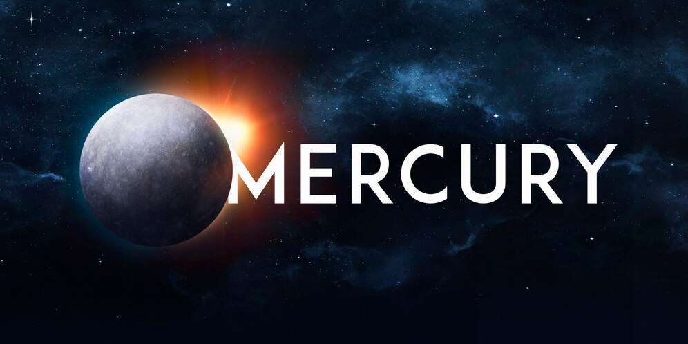

Mercury Facts
The smallest planet in our solar system and nearest to the Sun, Mercury is only slightly larger than Earth's
Moon. From the surface of Mercury, the Sun would appear more than three times as large as it does when
viewed from Earth, and the sunlight would be as much as seven times brighter.
Introduction
Mercury's surface temperatures are both extremely hot and cold. Because the planet is so close to the Sun,
day temperatures can reach highs of 800°F (430°C). Without an atmosphere to retain that heat at night,
temperatures can dip as low as -290°F (-180°C).
Despite its proximity to the Sun, Mercury is not the hottest planet in our solar system – that title belongs
to nearby Venus, thanks to its dense atmosphere. But Mercury is the fastest planet, zipping around the Sun
every 88 Earth days.
When Discovered Murcury?
Although Mercury was probably seen by prehistoric man, the first recorded observation was by Timocharis in 265
B.C. The early Greeks believed that the east and west elongations of Mercury represented two separate objects
which they called Hermes (evening star) and Apollo (morning star).
Size and Distance
With a radius of 1,516 miles (2,440 kilometers), Mercury is a little more than 1/3 the width of Earth. If
Earth were the size of a nickel, Mercury would be about as big as a blueberry.
From an average distance of 36 million miles (58 million kilometers), Mercury is 0.4 astronomical units away
from the Sun. One astronomical unit (abbreviated as AU), is the distance from the Sun to Earth. From this
distance, it takes sunlight 3.2 minutes to travel from the Sun to Mercury.
Atmosphere
Instead of an atmosphere, Mercury possesses a thin exosphere made up of atoms blasted off the surface by the solar
wind and striking meteoroids. Mercury's exosphere is composed mostly of oxygen, sodium, hydrogen, helium, and
potassium.

Venus Facts
Venus is the second planet from the Sun, and our closest planetary neighbor. It's the hottest planet in our solar
system, and is sometimes called Earth's twin.
Introduction
Similar in structure and size to Earth, Venus spins slowly in the opposite direction from most planets. Its thick
atmosphere traps heat in a runaway greenhouse effect, making it the hottest planet in our solar system with
surface temperatures hot enough to melt lead. Glimpses below the clouds reveal volcanoes and deformed mountains.
Venus is named for the ancient Roman goddess of love and beauty, who was known as Aphrodite to the ancient Greeks.
Most features on Venus are named for women.
When Discovered Venus?
The first person to look at Venus in a telescope was that prodigious astronomer Galileo Galilei. He took the first
accurate observations of the planet in 1610.
Size and Distance
Venus is about 7,521 miles (12,104 kilometers) in diameter. Distance from the Sun: The second planet from our
star has an average distance from the Sun of 67 million miles (108 million km). Orbit around the Sun: It takes 225
Earth days for Venus to go around the Sun one time.
Atmosphere
Venus’ atmosphere is one of extremes. With the hottest surface in the solar system, apart from the Sun itself,
Venus is hotter even than the innermost planet, charbroiled Mercury. The atmosphere is mostly carbon dioxide – the
same gas driving the greenhouse effect on Venus and Earth – with clouds composed of sulfuric acid. And at the
surface, the hot, high-pressure carbon dioxide behaves in a corrosive fashion. But higher up in the atmosphere,
temperatures and pressure begin to ease.
Earth Facts
while Earth is only the fifth largest planet in the solar system, it is the only world in our solar system with
liquid water on the surface. Just slightly larger than nearby Venus, Earth is the biggest of the four planets
closest to the Sun, all of which are made of rock and metal.
Earth is the only planet in the Solar System whose English name does not come from Greek or Roman mythology. The
name was taken from Old English and Germanic. It simply means "the ground." There are, of course, many names for
our planet in the thousands of languages spoken by the people of the third planet from the Sun.
Introduction
Airless worlds in our solar system seem peppered with craters large and small. Earth, on the other hand, has few
craters, but a thick atmosphere and much surface activity. Although impacts occurred on Earth at the same rate,
craters have since been erased by forces in the planet’s crust and atmosphere. What can the comparison between the
obvious persistent cratering on so many other worlds, and the different appearance of Earth, tell us about the
history of our planet?
When Discovered Earth?
The earliest documented mention of the concept dates from around the 5th century BC, when it appears in the
writings of Greek philosophers. In the 3rd century BC, Hellenistic astronomy established the roughly spherical
shape of Earth as a physical fact and calculated the Earth's circumference.
Size and Distance
With a radius of 3,959 miles (6,371 kilometers), Earth is the biggest of the terrestrial planets and the fifth
largest planet overall.
From an average distance of 93 million miles (150 million kilometers), Earth is exactly one astronomical unit
away from the Sun because one astronomical unit (abbreviated as AU), is the distance from the Sun to Earth. This
unit provides an easy way to quickly compare planets' distances from the Sun.
It takes about eight minutes for light from the Sun to reach our planet.
Atmosphere
Near the surface, Earth has an atmosphere that consists of 78% nitrogen, 21% oxygen, and 1% other gases such as
argon, carbon dioxide, and neon. The atmosphere affects Earth's long-term climate and short-term local weather and
shields us from much of the harmful radiation coming from the Sun. It also protects us from meteoroids, most of
which burn up in the atmosphere, seen as meteors in the night sky, before they can strike the surface as
meteorites.
Mars Facts
Mars – the fourth planet from the Sun – is a dusty, cold, desert world with a very thin atmosphere. This dynamic
planet has seasons, polar ice caps, extinct volcanoes, canyons and weather.
Introduction
Mars is one of the most explored bodies in our solar system, and it's the only planet where we've sent rovers to
roam the alien landscape. NASA missions have found lots of evidence that Mars was much wetter and warmer, with a
thicker atmosphere, billions of years ago.
Mars was named by the Romans for their god of war because its reddish color was reminiscent of blood. The
Egyptians called it "Her Desher," meaning "the red one."
Even today, it is frequently called the "Red Planet" because iron minerals in the Martian dirt oxidize, or rust,
causing the surface to look red.
When discovered Mars?
Much like Venus, the first person to see Mars through a telescope was astronomer Galileo Galilei. He took the
first accurate observations of the planet in 1610.
size and Distance
With a radius of 2,106 miles (3,390 kilometers), Mars is about half the size of Earth. If Earth were the size of a
nickel, Mars would be about as big as a raspberry.
From an average distance of 142 million miles (228 million kilometers), Mars is 1.5 astronomical units away from
the Sun. One astronomical unit (abbreviated as AU), is the distance from the Sun to Earth. From this distance, it
takes sunlight 13 minutes to travel from the Sun to Mars.
Atmosphere
Mars has a thin atmosphere made up mostly of carbon dioxide, nitrogen, and argon gases. To our eyes, the sky would
be hazy and red because of suspended dust instead of the familiar blue tint we see on Earth. Mars' sparse
atmosphere doesn't offer much protection from impacts by such objects as meteorites, asteroids, and comets.
The temperature on Mars can be as high as 70 degrees Fahrenheit (20 degrees Celsius) or as low as about -225
degrees Fahrenheit (-153 degrees Celsius). And because the atmosphere is so thin, heat from the Sun easily escapes
this planet. If you were to stand on the surface of Mars on the equator at noon, it would feel like spring at your
feet (75 degrees Fahrenheit or 24 degrees Celsius) and winter at your head (32 degrees Fahrenheit or 0 degrees
Celsius).
Occasionally, winds on Mars are strong enough to create dust storms that cover much of the planet. After such
storms, it can be months before all of the dust settles.
Jupiter Facts
Jupiter is the fifth planet from our Sun and is, by far, the largest planet in the solar system – more than twice
as massive as all the other planets combined.Jupiter is the fifth planet from our Sun and is, by far, the largest
planet in the solar system – more than twice as massive as all the other planets combined.
Introduction
Jupiter's stripes and swirls are actually cold, windy clouds of ammonia and water, floating in an atmosphere of
hydrogen and helium. Jupiter’s iconic Great Red Spot is a giant storm bigger than Earth that has raged for
hundreds of years.
Jupiter is named for the king of the ancient Roman gods.
When Discovered Jupiter?
While Jupiter has been known since ancient times, the first detailed observations of this planet were made by
Galileo Galilei in 1610 with a small telescope. More recently, this planet has been visited by passing spacecraft,
orbiters and probes.
Size and Distance
With a radius of 43,440.7 miles (69,911 kilometers), Jupiter is 11 times wider than Earth. If Earth were the size
of a nickel, Jupiter would be about as big as a basketball.
From an average distance of 484 million miles (778 million kilometers), Jupiter is 5.2 astronomical units away
from the Sun. One astronomical unit (abbreviated as AU), is the distance from the Sun to Earth. From this
distance, it takes Sunlight 43 minutes to travel from the Sun to Jupiter.
Atmosphere
Jupiter's atmosphere is made up mostly of hydrogen (H2) and helium (He). Jupiter has 95 officially recognized
moons. In 1979 the Voyager mission discovered Jupiter's faint ring system. All four giant planets in our solar
system have ring systems.
Saturn Facts
Saturn is the sixth planet from the Sun, and the second-largest planet in our solar system.
Introduction
Like fellow gas giant Jupiter, Saturn is a massive ball made mostly of hydrogen and helium. Saturn is not the only
planet to have rings, but none are as spectacular or as complex as Saturn's. Saturn also has dozens of moons.
From the jets of water that spray from Saturn's moon Enceladus to the methane lakes on smoggy Titan, the Saturn
system is a rich source of scientific discovery and still holds many mysteries.
When Discovered Mars?
In 1610, Italian astronomer Galileo Galilei was the first to gaze at Saturn through a telescope. To his surprise,
he saw a pair of objects on either side of the planet. He sketched them as separate spheres and wrote that Saturn
appeared to be triple-bodied.
size and Distance
With a radius of 36,183.7 miles (58,232 kilometers), Saturn is 9 times wider than Earth. If Earth were the size of
a nickel, Saturn would be about as big as a volleyball.
From an average distance of 886 million miles (1.4 billion kilometers), Saturn is 9.5 astronomical units away from
the Sun. One astronomical unit (abbreviated as AU), is the distance from the Sun to Earth. From this distance, it
takes sunlight 80 minutes to travel from the Sun to Saturn.
Atmosphere
Saturn is blanketed with clouds that appear as faint stripes, jet streams, and storms. The planet is many
different shades of yellow, brown, and gray.
Winds in the upper atmosphere reach 1,600 feet per second (500 meters per second) in the equatorial region. In
contrast, the strongest hurricane-force winds on Earth top out at about 360 feet per second (110 meters per
second). And the pressure – the same kind you feel when you dive deep underwater – is so powerful it squeezes gas
into a liquid.
Saturn's north pole has an interesting atmospheric feature – a six-sided jet stream. This hexagon-shaped pattern
was first noticed in images from the Voyager I spacecraft and has been more closely observed by the Cassini
spacecraft since. Spanning about 20,000 miles (30,000 kilometers) across, the hexagon is a wavy jet stream of
200-mile-per-hour winds (about 322 kilometers per hour) with a massive, rotating storm at the center. There is no
weather feature like it anywhere else in the solar system.
Uranus Facts
Uranus is the seventh planet from the Sun, and it has the third largest diameter of planets in our solar system.
Uranus appears to spin sideways.
Introduction
Uranus is a very cold and windy world. The ice giant is surrounded by 13 faint rings and 27 small moons. Uranus
rotates at a nearly 90-degree angle from the plane of its orbit. This unique tilt makes Uranus appear to spin
sideways, orbiting the Sun like a rolling ball.
When Discovered Uranus?
The planet Uranus was discovered by William Herschel on March 13, 1781. He discoverd Uranus while surveying stars
in the night sky using a telescope that he had built himself. Herschel noticed that one of these "stars" seemed
different, and after observing it many more times, noticed that it orbited the Sun.
Size and Distance
With a radius of 15,759.2 miles (25,362 kilometers), Uranus is four times wider than Earth. If Earth was the size
of a nickel, Uranus would be about as big as a softball.
From an average distance of 1.8 billion miles (2.9 billion kilometers), Uranus is 19.8 astronomical units away
from the Sun. One astronomical unit (abbreviated as AU), is the distance from the Sun to Earth. From this
distance, it takes sunlight 2 hours and 40 minutes to travel from the Sun to Uranus.
Atmosphere
Uranus' atmosphere is mostly hydrogen and helium, with a small amount of methane and traces of water and ammonia.
The methane gives Uranus its signature blue color.
While Voyager 2 saw only a few discrete clouds, a Great Dark Spot, and a small dark spot during its flyby in 1986
– more recent observations reveal that Uranus exhibits dynamic clouds as it approaches equinox, including rapidly
changing bright features.
Neptune Facts
Neptune is the eighth and most distant planet in our solar system.
Introduction
Dark, cold, and whipped by supersonic winds, ice giant Neptune is more than 30 times as far from the Sun as Earth.
Neptune is the only planet in our solar system not visible to the naked eye. In 2011 Neptune completed its first
165-year orbit since its discovery in 1846.
Neptune is so far from the Sun that high noon on the big blue planet would seem like dim twilight to us. The warm
light we see here on our home planet is roughly 900 times as bright as sunlight on Neptune.
When Discovered Neptune?
On the night of Sept. 23-24, 1846, astronomers discovered Neptune, the eighth planet orbiting around the Sun. The
discovery was made based on mathematical calculations of its predicted position due to observed perturbations in
the orbit of the planet Uranus.
Size and Distance
With a radius of 15,299.4 miles (24,622 kilometers), Neptune is about four times wider than Earth. If Earth were
the size of a nickel, Neptune would be about as big as a baseball.
From an average distance of 2.8 billion miles (4.5 billion kilometers), Neptune is 30 astronomical units away from
the Sun. One astronomical unit (abbreviated as AU), is the distance from the Sun to Earth. From this distance, it
takes sunlight 4 hours to travel from the Sun to Neptune.
Atmosphere
Neptune's atmosphere is made up mostly of hydrogen and helium with just a little bit of methane. Neptune's
neighbor Uranus is a blue-green color due to such atmospheric methane, but Neptune is a more vivid, brighter blue,
so there must be an unknown component that causes the more intense color.